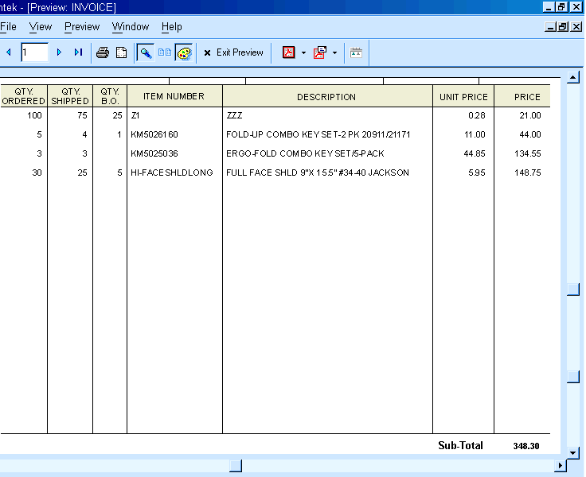

Vertical Lines on Reports
by Bill Warner
Have you ever wanted to create an invoice or purchase order that has vertical lines separating the columns? This might sound easy at first, but how do you get every invoice to appear the same when the number of records varies from one to another?
Using the old adage, "Necessity is the Mother of Invention," I was forced to come up with something for a customer. Since I would never know how many records might be in the child table (1), I couldn't just put a border on each field (limiting the border to right and left only). This would give me inconsistent results.
Then I hit on the idea of using a temporary table (see Temp Tables elsewhere in this issue). Instead of creating the invoice report directly from my set, I decided to create it on the temp table. This would give me the ability to add dummy records to that table, so the total number of records in the report would be the same, regardless of the number of records in the set. Then, creating invoices with a uniform appearance would be much easier.
Here's the idea: If you put a vertical line in the detail section of the report (so it is the same height as the detail section), that line will be continuous from one record to the next, and it's bottom end will be at the bottom of the last record. If you always have the same number of records, the line will always be the same height.
Here's the script that I attached to a button on the form:
|
'********** RETRIEVE THE INVOICE NUMBER FROM THE FORM dim global invno as C invno = parentform:invno.value '********** RUN A QUERY TO FIND THE RECORD, THEN COPY TO A TEMP TABLE (INV_TMP) t = table.current() query.order = "" query.filter = "INVNO=VAR->INVNO" query.options = "I" t.query_create() copy.set = "order_st.set" copy.db = "inv_tmp.dbf" copy.dd = .F. copy.delete_o_dd = .F. copy.records = .T. copy.fields = 8 copy.field1 = "Invno" copy.field2 = "Custno" copy.field3 = "Po_No" copy.field4 = "Ordparts->Partno" copy.field5 = "Ordparts->Qtyord" copy.field6 = "Ordparts->Qtyship" copy.field7 = "Ordparts->Userpr" copy.field8 = "Ordparts->Extpr" t.copy() '********** OPEN THE TEMP TABLE, QUERY RECORDS TO GET COUNT tt = table.open("inv_tmp") query.order = "" query.filter = "INVNO=VAR->INVNO" query.options = "I" i = tt.query_create() qt = i.records_get() '********** CREATE NEW BLANK RECORDS; QTY IS 20 - COUNT + 1 FOR x = qt to 20 tt.enter_begin() tt.Invno = var->invno tt.enter_end() NEXT x report.preview("INVOICE") |
In this script, the current table is actually the set upon which the form is based. INVNO is the linking field between the parent and child, and is also set to be a unique value. INV_TMP in the temporary table. The copy operation only shows 8 fields, whereas there are more in the actual script. The FOR...NEXT function is where I determine how many dummy records to use, based on how many records are in the actual invoice (this will give me a total of 21 lines).
Here's what the report looks like:

(1) This concept is based on using a set, in which the parent record has the sales info (customer, invoice number, etc.) and the one-many child has one record for each item sold.
See Also
Thanks To
Bill Warner